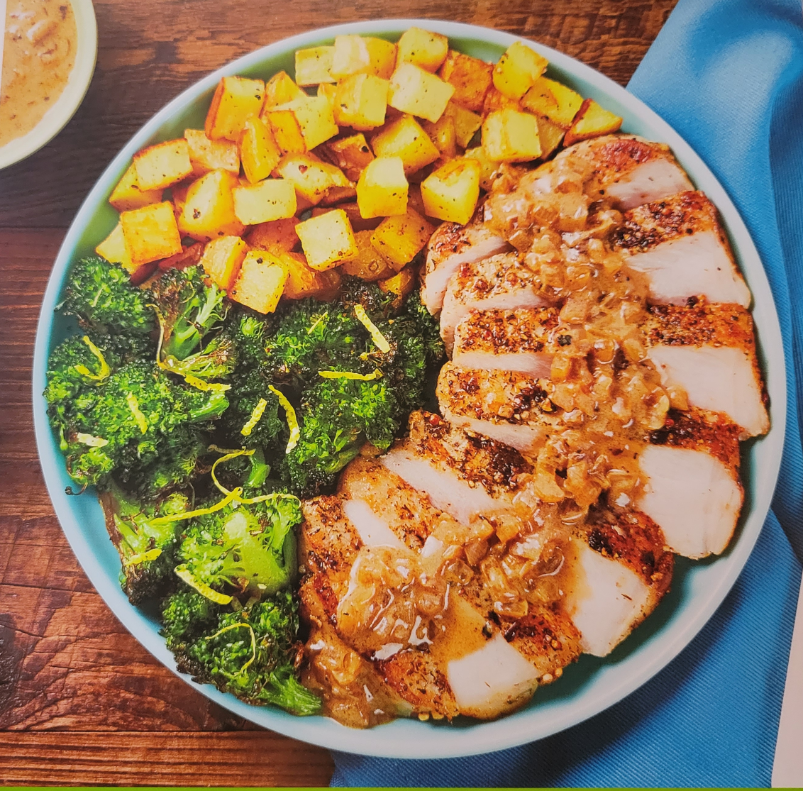

Home
Steakhouse-Style Pork Chops

Ingredients
- 12 oz - Potatoes
- 1 - Yellow Onion
- 1 - Lemon
- 1.5 oz Caesar Dressing
- 10 oz - Pork Chops
- 1 TBSP - Bold & Savory Steak Spice
- 1 - Beef Stock
- 8 oz - Broccoli
Bust Out
- Zester
- Baking sheet
- Paper towels
- Large pan
- Kosher salt
- Pepper
- Cooking Oil (2 tsp)
- Olive Oil (2 tsp)
1) Prep
- Adjust rack to top position and preheat oven to 425 degrees
- Wash and dry produce
- Dice potatoes into 1/2-inch pieces
- Cut broccoli florets into bite size pieces if necessary
- Halve, peel, and mince half the onion
- Zest and quarter lemon
2) Roast Potatoes
- Toss potatoes on one side of a baking sheet with a drizzle of oil, salt, and pepper
- Roast on top rack for 5 minutes
3) Roast Broccoli
- Once potatoes have roasted 5 minutes, remove sheet from oven
- Carefully tosss broccoli on empty side with a drizzle of oil, salt, and pepper
- Return to top rack until potatoes are golden brown and broccoli is tender, 15-20 minutes
4) Cook Pork
- While veggies roast, pat pork dry with paper towels; season all over with salt
- Coat with as much Steak Spice as will stick
- Heat a drizzle of olive oil in a large pan over medium-high heat
- Add pork and cook until browned and cooked through, 4-6 minutes per side
- Turn off heat; transfer pork to a cutting board. Wipe out pan
5) Make Sauce
- Heat a drizzle of olive oil in same pan over medium heat
- Add minced onion; cook, stirring, until softended and lightly browned, 3-4 minutes
- Stir in stock concentrate and 1/4 cup water
- Bring to a simmer and cook unitl slightly reduced, 2-3 minutes
- Remove from heat and stir in 11/2 TBSP dressing until combined
- Season generously with pepper
6) Finish & Serve
- Toss broccoli with lemon zest
- Thinly slice pork crosswise
- Divide pork, potatoes, and broccoli between plates
- Spoon pan sauce over pork
- Serve with lemon wedges on the side